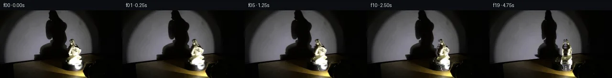

![首帧]()

Round 00
2026-11-05T04:42:52.845935+00:00像素候选变化代码 +210/−0inspection 更新
pixels 84d2e606230091a6 · code 819288ff9fc43469
查看本轮 generate.py 真实 diff
--- previous/generate.py
+++ current/generate.py
@@ -0,0 +1,210 @@
+"""Source-calibrated local pixel synthesis; no external assets or renderer."""
+from pathlib import Path
+import json
+import numpy as np
+from PIL import Image, ImageDraw
+from scipy.ndimage import map_coordinates, gaussian_filter, gaussian_filter1d
+from artifact_io import save
+
+ROOT = Path(__file__).resolve().parent
+SOURCE = np.array(Image.open(ROOT / 'first_frame.png').convert('RGB'), dtype=np.uint8)
+H, W = SOURCE.shape[:2]
+F = SOURCE.astype(np.float64)
+Y, X = np.mgrid[:H, :W].astype(float)
+
+# Numeric contour measurements. These include the object's dark carved recesses.
+contours = np.array([
+ [60,149.0,152.0],[61,147.5,153.5],[62,146.0,154.5],[63,145.0,155.5],
+ [64,144.5,156.0],[65,145.0,156.0],[66,145.5,157.0],[67,145.5,157.5],
+ [68,145.5,158.5],[69,145.5,159.5],[70,145.5,160.5],[71,145.5,161.5],
+ [72,145.5,162.5],[73,145.0,163.5],[74,144.5,164.5],[75,144.5,165.5],
+ [76,143.5,166.0],[77,143.0,167.0],[78,142.5,167.5],[79,141.5,167.5],
+ [80,141.5,167.5],[81,142.0,168.5],[82,143.0,169.5],[83,144.0,170.5],
+ [84,143.5,170.5],[85,143.5,170.5],[86,142.5,170.5],[87,142.5,170.0],
+ [88,141.5,169.5],[89,141.5,169.0],[90,141.5,168.5],[91,141.5,167.5],
+ [92,141.5,167.5],[93,142.5,168.5],[94,142.5,168.5],[95,142.5,169.5],
+ [96,144.0,169.0],[97,144.0,170.0],[98,144.0,171.5],[99,143.5,172.5],
+ [100,143.0,172.5],[101,142.5,171.5],[102,141.5,170.5],[103,141.0,169.5],
+ [104,142.0,169.5],[105,142.0,171.5],[106,142.0,172.5],[107,142.0,173.5],
+ [108,141.5,173.5],[109,141.5,173.5],[110,140.5,173.5],[111,140.5,173.5],
+ [112,140.5,173.5],[113,141.0,173.5],[114,142.0,173.5],[115,143.0,173.5],
+ [116,148.0,173.5],[117,150.0,174.0],[118,151.0,174.0],[119,151.5,174.0],
+ [120,151.5,173.5],[121,152.0,173.5],[122,152.0,173.0],[123,152.5,172.5],
+ [124,152.5,172.5],[125,152.5,172.0],[126,153.0,172.0],[127,154.0,171.0],
+ [128,155.5,169.0],[129,160.0,164.0]
+])
+left = np.interp(Y[:,0], contours[:,0], contours[:,1])
+right = np.interp(Y[:,0], contours[:,0], contours[:,2])
+center = (left + right)/2
+radius = (right-left)/2
+# Matte support; the gray base at 126-129 blends into the circular platform.
+a0 = np.clip(np.minimum(X-left[:,None]+.65, right[:,None]-X+.65),0,1)
+a0 *= np.clip(Y-59.6,0,1)*np.clip(129.2-Y,0,1)
+
+# A smooth lighting plate fitted only to numerically identified lit wall pixels.
+shadow_bounds = np.array([[0,99,120],[10,98,125],[20,94,134],[30,91,143],
+ [40,91,143],[50,92,142],[60,95,145],[65,98,145],[70,89,146],
+ [75,84,147],[80,77,148],[85,77,149],[90,76,149],
+ [95,67,149],[100,64,150],[105,57,151],[110,24,154]])
+sl = np.interp(Y[:,0],shadow_bounds[:,0],shadow_bounds[:,1])
+sr = np.interp(Y[:,0],shadow_bounds[:,0],shadow_bounds[:,2])
+support = np.clip((X-sl[:,None])/3,0,1)*np.clip((sr[:,None]-X)/3,0,1)
+# The projection of the circular platform is stationary at the wall's foot.
+wall_limit = 114.8 - .119*X
+wall = np.clip((wall_limit-Y)/1.2,0,1)
+shadow_support = support*wall*np.clip((109-Y)/5,0,1)
+wall_lit = ((F.mean(2)>62)&(F[:,:,2]>=F[:,:,0]-3)&(Y<104)&
+ (Y<wall_limit-2)&(X>20)&(X<184)&(support<.02)&(a0<.01))
+xx=(X-105)/90; yy=(Y-65)/65
+basis=np.stack([np.ones_like(X),xx,xx**2,yy,yy**2,yy**3,xx*yy,xx**2*yy,xx*yy**2],-1)
+coef=np.linalg.lstsq(basis[wall_lit],F[wall_lit],rcond=None)[0]
+plate=np.clip(basis@coef,0,180)
+plate=gaussian_filter(plate,(.7,.7,0))
+ambient=np.array([3.4,2.5,.8])
+raw=np.median((plate-F)/np.maximum(plate-ambient,1),axis=2)
+q=np.clip(raw,0,.995)*shadow_support
+# Remove the sculpture from the inferred projection field. The shadow boundary
+# behind it is extrapolated from the exposed wall to avoid ceramic contamination.
+for y in range(60,105):
+ li=int(np.floor(left[y]))
+ if li>0:
+ tail=np.clip((sr[y]-np.arange(li,W))/max(sr[y]-li,1),0,1)
+ q[y,li:]=q[y,li-1]*tail*wall[y,li:]*np.clip((109-y)/5,0,1)
+q=gaussian_filter(q,(.28,.28))
+
+# Background under the measured figurine is reconstructed from the wall plate
+# and neighboring floor pixels. It is used solely when that surface is vacated.
+wall_bg=plate*(1-q[:,:,None])+ambient*q[:,:,None]
+floor_bg=F.copy()
+for y in range(60,130):
+ vleft=F[y,136:141].mean(0)
+ vright=F[y,176:181].mean(0)
+ f=np.clip((np.arange(W)-140)/39,0,1)
+ floor_bg[y]=vleft[None,:]*(1-f[:,None])+vright[None,:]*f[:,None]
+under=wall_bg*wall[:,:,None]+floor_bg*(1-wall[:,:,None])
+clean=F*(1-a0[:,:,None])+under*a0[:,:,None]
+# Recover source foreground colors at antialiased boundaries.
+texture=(F-under*(1-a0[:,:,None]))/np.maximum(a0[:,:,None],.08)
… diff truncated; 123 more lines …